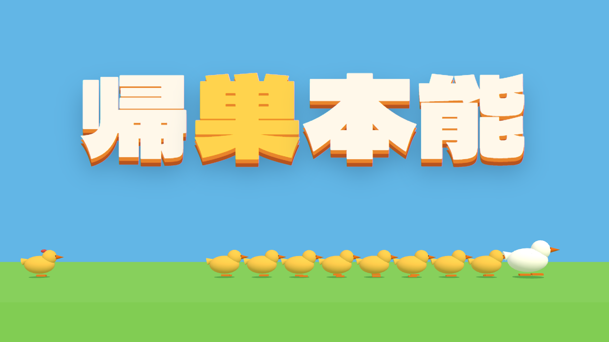
大島 橙也 / Touya Oshima
ゲームを作る。必要な絵も描く。
Game
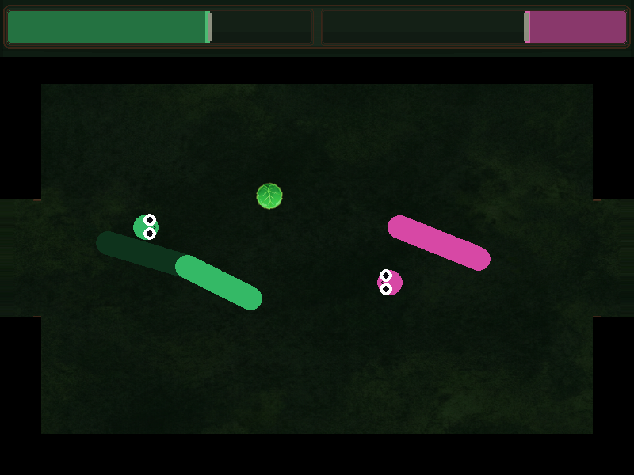
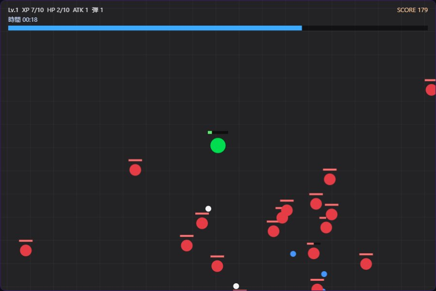
Game · Playable
サバイバル系 2D アクション
大量の敵を自動射撃でなぎ倒すサバイバルアクション。Java（Swing）で制作し、ポートフォリオ用に Canvas 版のブラウザデモも公開しています。ブラウザですぐ遊べます。
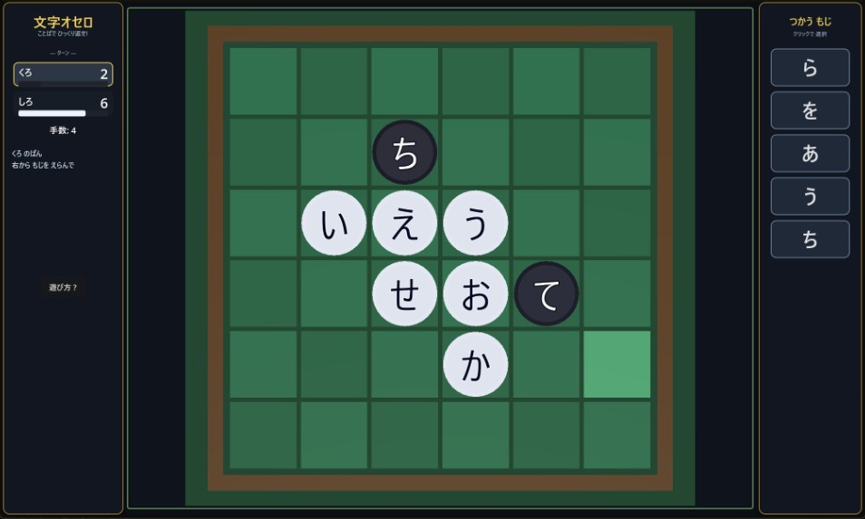
Godot 4.6 · Playable
文字オセロ
6×6 盤にひらがなを置き、横・縦の2〜4文字の語を作って相手の駒を反転。オセロ × もじぴったん風ルールを Godot で実装。2人対戦・CPU対戦に対応。
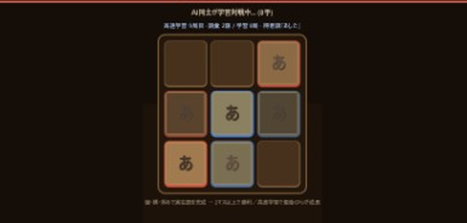
Godot 4 · Prototype
キエワード
3×3 の木製ボードで寿命付きひらがなを交互に配置。実在語の3連ラインとマス所有権で即勝利する、1対1の超速ワードボドゲ。モバイル向け UI と CPU AI を検証中。
Tools
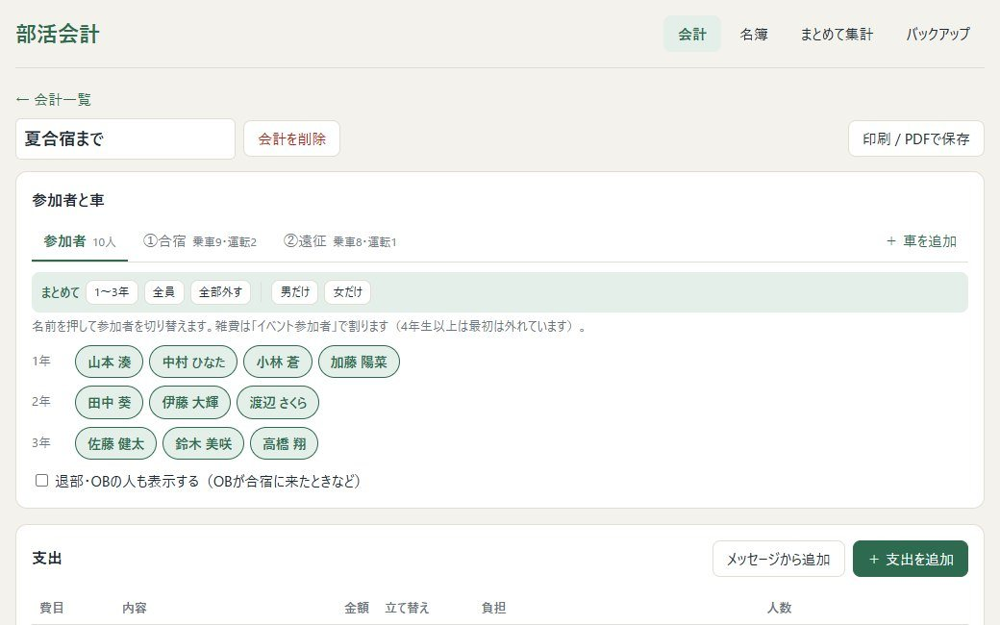
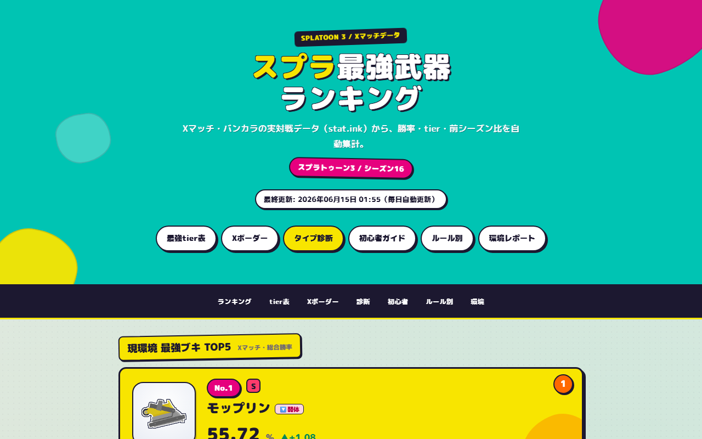
Dev · Data · Live
スプラ最強武器ランキング
stat.ink から勝率データを自動取得し、Python で静的サイトを生成。GitHub Actions による日次更新、武器別ページ、診断・X マッチ境界値など。データの取得から公開までを自動化しています。
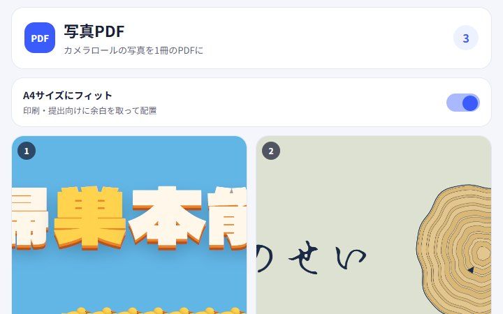
Web · Expo
写真PDF
カメラロールの写真を A4 PDF にまとめるツール。Web 版（ブラウザ完結）と Expo モバイル版の両方を実装。並べ替え・端末保存・共有に対応。
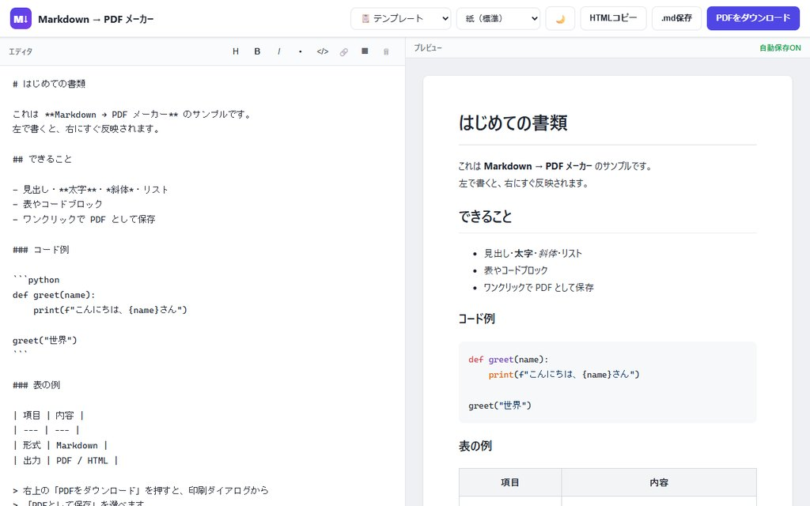
Web · Utility
Markdown → PDF
Markdown をブラウザ上で PDF に変換するシンプルな Web ツール。クライアント完結で、原稿執筆から出力までを一画面で完結。
Art / Story
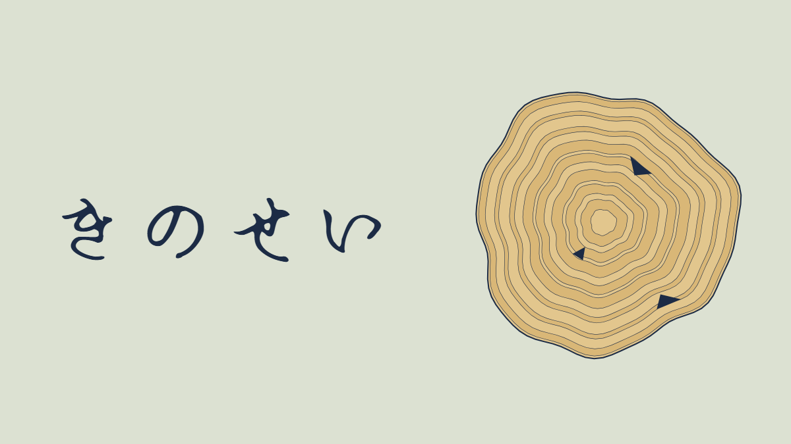
Short Story · 期間限定公開
きのせい
悩みの種が心で発芽すると、人は木になる。制作中の 3D アクションゲームの原案として書いた短編。設定は自分で考え、本文は Claude が執筆。感想を集めるため、期間限定で公開しています。
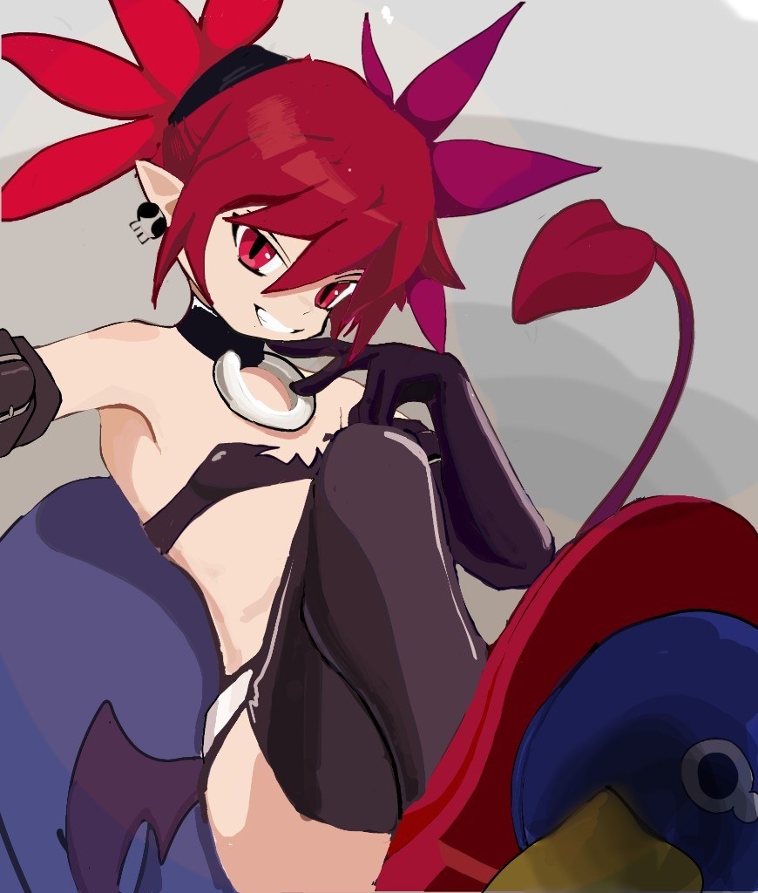
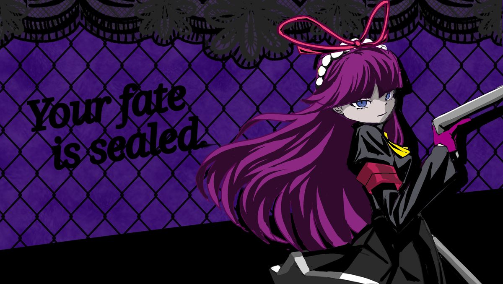
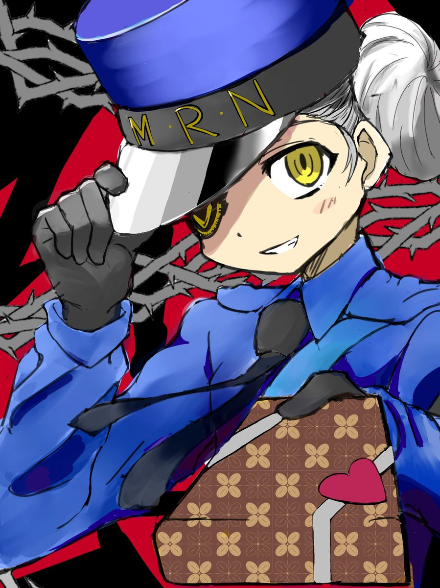
Visual
キャラクター・2D イラスト
ゲーム向けキャラクターデザインとセルシェーディング的な陰影表現。タイトルやUIにも活かせるビジュアル制作。『ディスガイア』のエトナなど、ファンアートも含みます。イラストの投稿は pixiv でも公開しています。
38名への調査
UX · Research
次世代ペンケース 製品企画
38名への調査から潜在ニーズを特定。容量・質感などユーザー視点のデータをもとに、機能美を追求したプロダクト企画を策定。
お問い合わせ
制作のご相談、コラボレーション、ポートフォリオに関するお問い合わせはこちらまで。
tochatarou@gmail.com
メールを送る